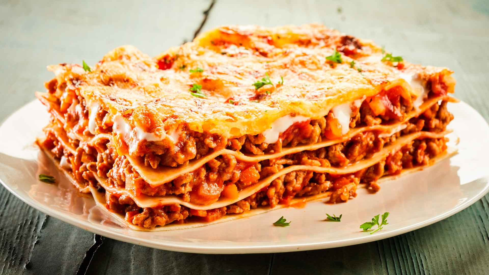

Home
Lasaña

Descripción
La lasañaes un plato italiano que consiste en capas de pasta
intercaladas con ingredientes como carne, verduras,
pescados o mariscos.. Se cubre con salsa bechamel y
queso rallado, y se hornea.
Ingredientes
- 500 g. de carne (una mezcla de cerdo y ternera)
- 2 pimientos rojos
- 2 zanahorias
- 2 dientes de ajo
- 150 g. de bacon o panceta
- 2 cebollas grandes
- 250 g. de tomate natural (1 vaso aproximadamente)
- 250 ml de vino blanco (200 ml. aproximadamente)
- 100 ml. de aceite de oliva virgen extra
- 1 cucharita colmada de orégano seco (o hierbas provenzales)
- Sal y pimienta negra recién molida (al gusto de cada casa)